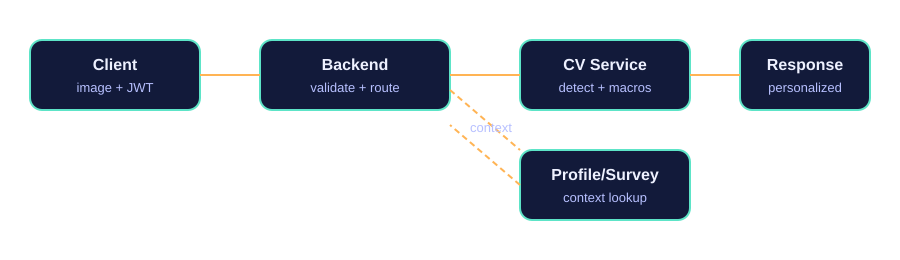

Tổng quan
CV Service nhận ảnh món ăn, chạy pipeline nhận diện và trả về danh sách món + dinh dưỡng. Service không bắt buộc user context để chạy CV, nhưng có thể dùng JWT để lưu lịch sử và personalization.
-
API chính:
POST /cv/analyze(sync),POST /cv/analyze/async(async) - Auth: Bearer JWT (optional). Nếu không có token thì không lưu history.
- Context (profile/survey): backend tự lấy từ DB/cache và áp dụng sau khi nhận kết quả.
Luồng tích hợp chuẩn
1) Client -> Backend
- Client gửi ảnh + JWT
- Backend validate JWT, lấy
user_id
2) Backend -> CV Service
- Gọi
/cv/analyzevới ảnh -
Forward
Authorization: Bearer <token>nếu cần lưu history
3) Personalization
- Backend lấy profile/survey từ DB hoặc cache
- Áp dụng rules (dị ứng, mục tiêu kcal, khẩu phần)
4) Response
- Trả kết quả đã cá nhân hóa về client

Backend -> CV Service + Profile/Survey -> Response" />API chính
POST /cv/analyze sync
- Request: multipart form field
image -
Response: JSON gồm
detected_foods,nutrition_breakdown,total_macros
POST /cv/analyze/async async
- Response:
job_id - Poll:
GET /cv/jobs/{job_id}
Ví dụ request
cURL
curl -X POST "http://<cv-service>/cv/analyze" \
-H "Authorization: Bearer <JWT>" \
-F "image=@/path/to/image.jpg"Python (requests)
import requests
url = "http://<cv-service>/cv/analyze"
headers = {"Authorization": "Bearer <JWT>"}
files = {"image": open("/path/to/image.jpg", "rb")}
resp = requests.post(url, headers=headers, files=files, timeout=30)
resp.raise_for_status()
print(resp.json())Context: lấy ở đâu và dùng như thế nào
- JWT claims: nhét các field nhỏ (diet_type, allergens, goal) vào token để đọc nhanh.
-
Profile service + cache: backend lấy
user_id-> fetch profile/survey -> cache Redis 5-30 phút. - Snapshot từ client: client gửi một phần context cho request hiện tại.
Gợi ý: không để CV pipeline phụ thuộc context để tránh tăng latency.
Lỗi thường gặp
-
415 Unsupported Media: thiếu field
imagehoặc sai MIME. - 503 Models are still loading: service đang warm-up model.
- Auth optional: không có JWT thì vẫn nhận kết quả CV, chỉ không lưu history.
Best practices
- Giữ CV service stateless, context xử lý ở backend.
- Cache profile/survey, tránh gọi DB mỗi request.
- Log
request_idđể trace end-to-end.